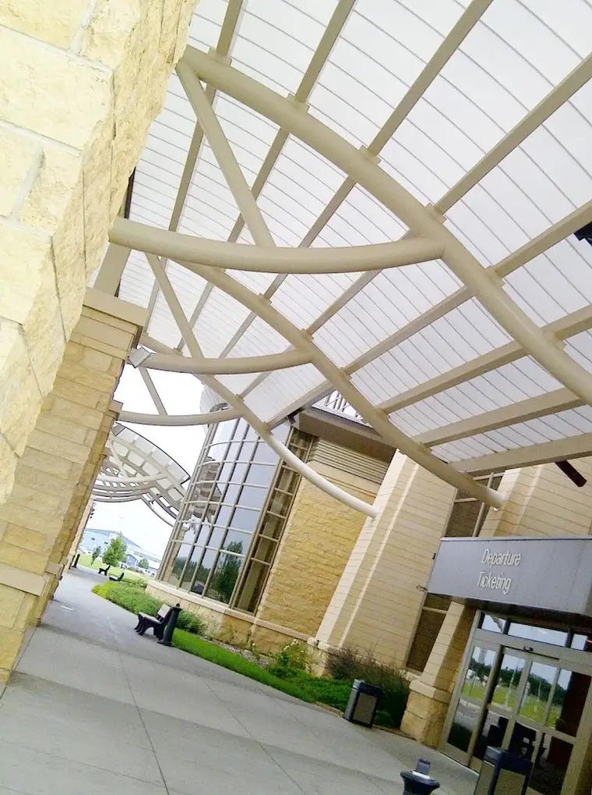

I wasn’t supposed to be at this airport last week.
 |
| Bismarck, ND, airport |
{kind=link}
I wasn’t supposed to be on this trip at all. But last Tuesday, on the morning I was to drive my son to a halfway point so he could fly with my mom to visit her college friend in Kansas — and have an adventure of a lifetime (and experience his first plane ride) — she called to say it wasn’t going to work. There were health problems on the home front, and we were going to have to cancel the trip; the trip that had to be canceled last summer for a similar reason.
It was hard last year to tell my son he wouldn’t be going to Kansas after all of the anticipation and planning. It was even harder this time around.
Then I started wondering about a Plan B, which my mom had initially suggested, and I began making phone calls to see what might be possible. I worked hard to rearrange things at work and home, but it ended up with my son and me meeting this creepy guy at the Minneapolis airport on the way to Kansas:
{kind=link}
Earlier this summer, on a work related trip, I sat next to a teen girl who had never been on a plane before. And as much as I have loved that my mom has given this gift to our oldest three so far (as she has my sister’s kids), watching that giddy girl next to me caused an unexpected wistfulness that I’d never have the pleasure of seeing any of my kids experience their first plane ride.
It’s not something that can be replicated. The wow factor is never the same after that first ride into the clouds.
Plan B was stressful to pull off, and jarred our whole family initially, but in the end, I received that wished-for gift I thought could not be possible. I was able to be by my son’s side for his first-ever fly-into-the-sky.
{kind=link}
Here he is just minutes after landing in Kansas. He was trying to make a mini tornado with his strawberry Crush in honor of one of the state’s claims to fame.
We made it! And I loved every moment of being his travel companion. It was a gift of a lifetime, for me and for him.
We’ve been staying with my mom’s good college friend Joanne and her husband, Bert, and hanging out an awful lot with their granddaughter Megan, who is the same age as Adam. Here they are dressed up as farm animals at a children’s museum called Wonderscope.
{kind=link}
The last time this gang got together, I was 15, and some of them hadn’t been born yet or introduced to the Zylstra family by marriage.

I keep learning that, even though a little stress is almost always involved in pulling it off, Plan B can be a beautiful adventure.
This trip involved both loss and gain, all at the same time. But now that it’s almost over, I’m feeling mostly grateful for this sweet opportunity to hang out with my son and the beautiful people who, in many ways, have seemed like family to us through the years.
The greatest surprise of all, I think, is that I have truly allowed myself to relax, for the first time in six months, I think. I’ve read one book and started another, I’ve played many card games and even learned a new one, and I’ve been spoiled, with my son, in daily excursions around Kansas and Missouri.
I’m beginning to feel renewed and refreshed in a way that wasn’t possible until now, and I can’t help but wonder if God had this up His sleeves all along, knowing how desperate I was to pull back and truly enjoy life and my summer.
As for the health issues that prompted the trip? There’s hope there; we’ll know more soon. We’re trying to be optimistic.
Thank you, God, for this beautiful opportunity, even though it didn’t come without some stress. I have immensely enjoyed seeing more of your lovely world with my son at my side.